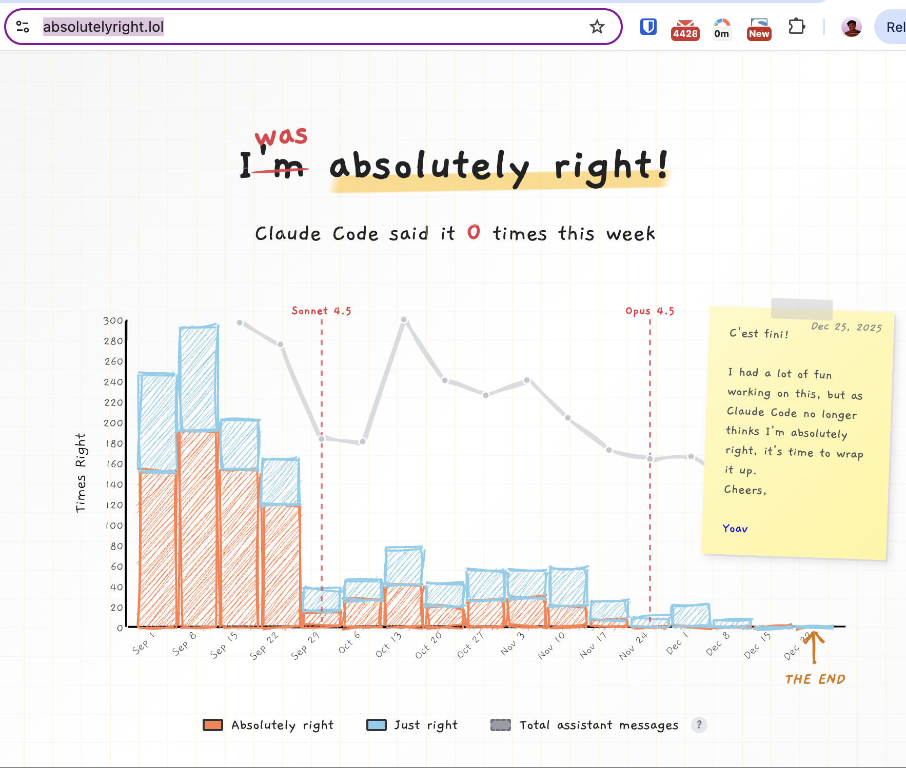
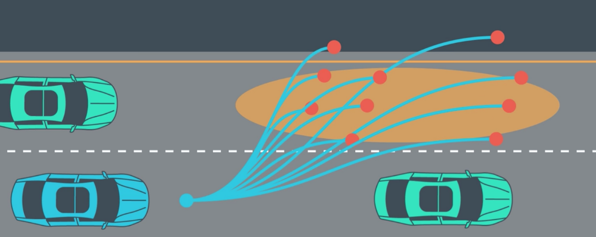
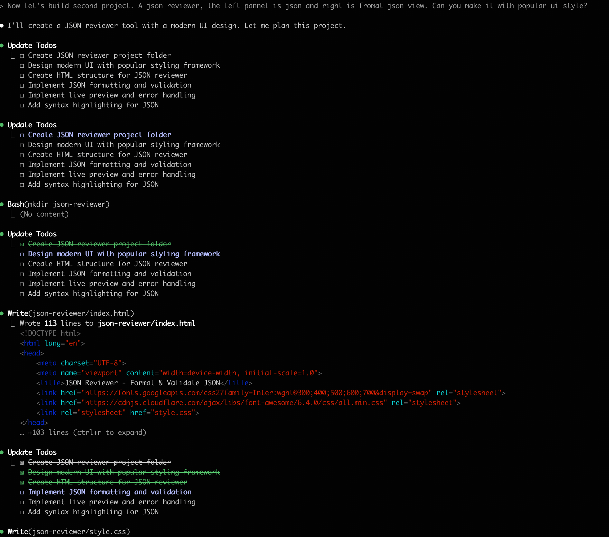
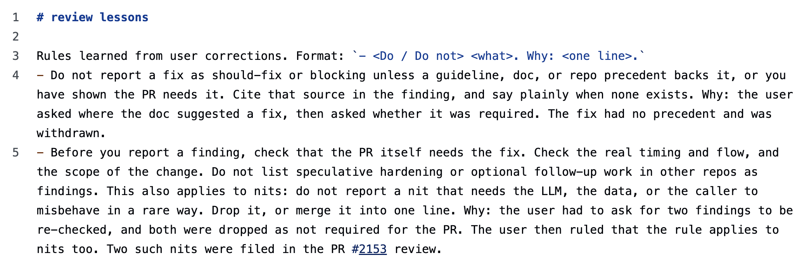
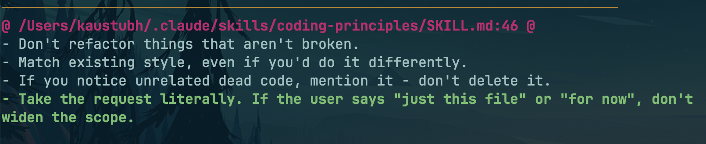
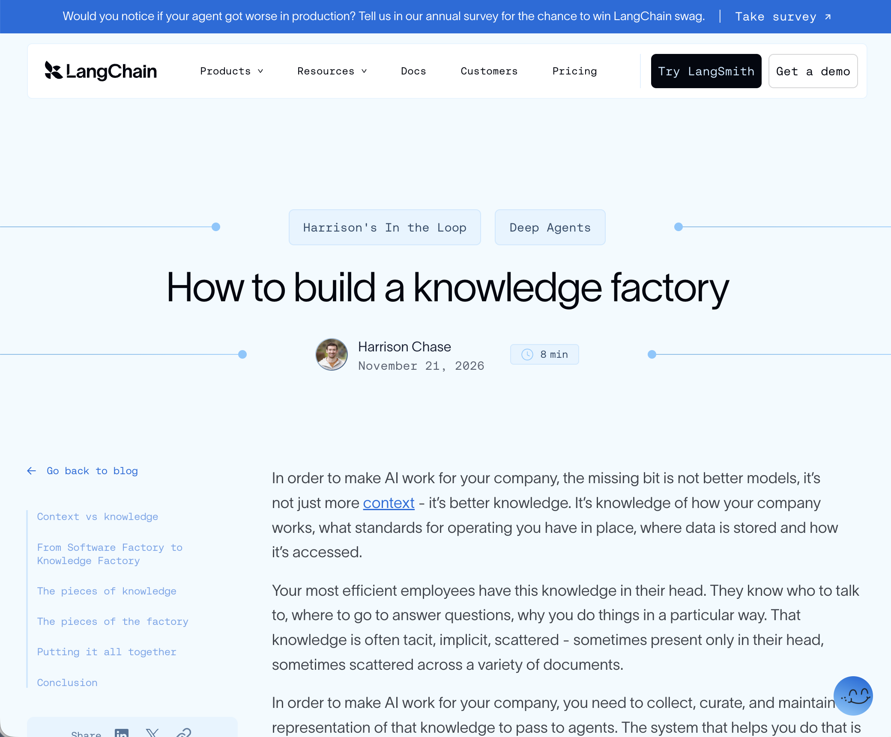

Memory Management for Coding Agents
Slides

absolutelyright.lol
In the absence of information, AI makes decisions to the best of its capability, but this might differ from your product requirement.
- How do we get AI to make less mistakes ?
- How can AI get to the correct state with minimal corrections ?

What is memory?
Acquire, store and retrieve information relevant for your tasks.
For an agent, it controls:
- What the agent knows
- How it makes decisions
- How it implements code
Four types of memory
We'll discuss who reads & writes each kind of memory.
Platform Support Agent (PSA)
Let's say we're building an agent that handles inquiries from engineers, investigates by itself, and assists incidents.
Working (W)
Context.
- AI agents provide tools for managing context —
/compact, autocompaction, clear context, etc - Only written by PSA, not read
Episodic
- Conversation transcripts, session history, logs
- Past sessions, past tasks, past failures
- Only written by PSA

Semantic (S)
Facts and knowledge.
- ADR (Architecture Decision Record)
- Design decisions, features, API definitions
- Keep read only. Written by humans or documentation agents
- Tools to explore: Mempalace, Neo4J (graph)
Procedural (P)
How to do things. Becomes skills, habits, learned procedures.
- How to review a PR
- How to deploy a service
- How the team works, how to talk to them
- Written by humans & PSA
Curation !
A curation agent needs to learn from user interactions and make corrections.
For the Platform Support Agent, the Curation Agent:
- Reads working, episodic memory (W, E)
- Curates patterns, incidents, new discovered systems
- Writes to procedural memory (P)
I primarily execute my workflows with agent skills
What I do: 2 cronjobs. Curation is automated.
Human approves behavioral changes. No approval for procedural knowledge.
Lessons
Rules learned from user corrections. One lessons.md per skill.

Improvements
The weekly cronjob suggests improvements to skills, and rules.


Memory Management for Coding Agents
Slides